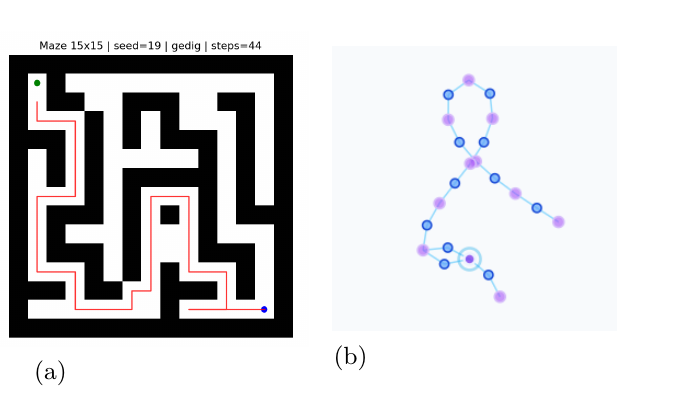

動的知識グラフの探索・統合を制御する統一ゲージの提案
1When 問題: 動的 KG は「いつ覚えるか」を持っていない
GraphRAG や Self-RAG は 何を検索するか を最適化する。一方で、動的に成長する知識グラフでは、新規エピソードを 構造として統合するか、探索を続けるか、棄却するか を判断する原理が必要になる。
2提出論文の主要結果
3統一評価関数 F
F はタスク内の相対比較として用いる。ΔSP は構造利得であり、迷路では「近道」がその利得として現れる。
4Wake 相: AG/DG による段階的判定
多数の候補をすべて大域評価すると高コストになる。geDIG は 0-hop の局所評価で違和感を検出し、必要な場合だけ multi-hop で近道を確認する。
物理的な移動 と 記憶グラフへの恒久保存 は別である。DG を通った接続だけが認知地図の骨格として残る。
5Maze: なぜ部分観測で解けるのか
8D: 位置、相対移動、通行可否、訪問回数、success/goal。クエリベクトルとの重み付き距離から候補分布を作る。

6Maze 結果: 成功率より「記憶圧縮」を見る
| 手法 | 成功率 | 平均 step | 圧縮率 |
|---|---|---|---|
| 15×15 (n=100, max=250) | |||
| Random Walk | 0.75 ± 0.08 | 105.8 | – |
| Greedy DFS | 0.99 ± 0.03 | 82.1 | – |
| geDIG | 0.98 ± 0.03 | 89.6 | 98% |
| 25×25 (n=60, max=500) | |||
| Random Walk | 0.40 ± 0.12 | 242.2 | – |
| Greedy DFS | 0.95 ± 0.06 | 242.2 | – |
| geDIG | 0.75 ± 0.11 | 254.1 | 99% |
25×25 では Greedy DFS の成功率が高い。geDIG の主張は、候補エッジの大半を棄却しても到達可能性を保つことに置く。
7共通グラフ化: 何をノード/エッジにするか
| 対象 | ノード | エッジ | F が判定するもの |
|---|---|---|---|
| Maze | 移動エピソード | 通行/想起接続 | この接続を記憶へ残すか |
| Transformer | トークン | Attention | 層が探索相か構造相か |
| Sleep | 既存記憶ノード | 再配線候補 | 入力なしで整理すべきか |
8Transformer: 同じ F が意味的 KG にも現れる

Attention 行列を token-relation graph として扱うと、浅層は高エントロピーな探索相、深層は低エントロピーな構造相として読める。
観測: 層別 F の遷移は p < 10-80。F 正則化は弱いと改善し、強すぎると性能を落とす。
| α | Accuracy | Δ |
|---|---|---|
| 0 | 86.00 ± 0.53 | – |
| 0.001 | 86.33 ± 0.46 | +0.33 |
| 0.01 | 86.27 ± 0.70 | +0.27 |
| 0.1 | 85.93 ± 1.10 | -0.07 |
| 1.0 | 78.93 ± 1.55 | -7.07 |
9考察: 操作的対応としての FEP/MDL
ΔEPC は複雑さ、ΔH は探索余地、ΔSP は構造利得に対応する。これは KL と GED の厳密同値を主張するものではなく、グラフ上で計算可能な操作的対応である。
また、F の構成項はグラフ内部状態から計算可能である。ただし Transformer の性能評価や CE 学習にはタスクラベルを用いる。
10今後の展望: Wake から Sleep へ
Wake: 入力評価
本論文の範囲。新規入力が来たとき、AG/DG で探索・統合・棄却を判定する。
- Maze: 移動エピソードを評価
- Transformer: Attention構造を評価
Sleep: 入力なしの整理
現在の記憶グラフ自身から再編候補を生成し、ΔF < 0 の整理だけを採択する。
- 冗長エッジ削除
- クラスタ統合・近道保持
B1 / 位相拡張
提出版の ΔSP を、発展版では β1 (B1) に拡張し、ループ/短絡を位相量として扱う。
- GraphRAG / Self-RAG への適用
- Wake/Sleep 両方で自律整理を制御